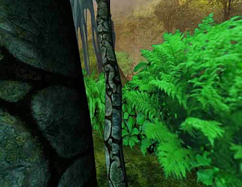
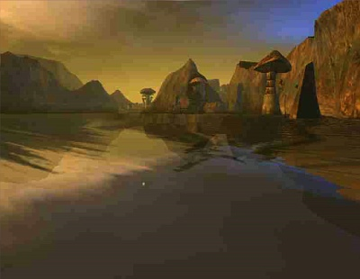

This picture of Negilahn’s exterior was sent to Jazz (an explorer) by Nick White.
Title: A little treat
From: Nick White
(Sent in by: Jazz)
Date: 03/05/07

This picture was made during a boat trip (by Douglas Sharper, Nick White and Rils, an explorer) back to Teledahn.
Title: On the way back
From: Rils
Date: 03/14/07

Jazz gained some information about D’ni culture from Nick White and compiled them in the following imager posts for everyone’s reference.
Title: Snippets from Nick (1)
From: Jazz
Date: 03/19/07
MUSIC - Two famous D’ni singers. Hadev was one of of the great musicians. 5644-5894. Wrote D’ni folk stuff mostly. Seems as though one of the famous singers of his writings was Suah, 5700-5993.
RELIGION - The D’ni valued taygahn. With Yahvo it was the most important thing. Better than doing good or evil it was a relationship. They thought the relationship with Yahvo would make sure they chose good over evil. That was the focus of their religion. Taygahn is a bit more than a relationship - not really a good translation for it.
FOOD AGES - There were two main kinds; livestock and crops. Both were run by the Guild of Caterers, although they worked closely with the Writers, obviously, in creating them.
Title: Snippets from Nick (2)
From: Jazz
Date: 03/29/07
Following on from Nick’s earlier snippets, he has answered some of the questions wich explorers raised.
1) The D’ni singer, Suah, was female.
2) Yahvo was considered a God, so the relationship would be similar to how we view a relationship with God.
3) The prophets claimed to speak directly to Yahvo at times, and other times through study.
4) In answer to the question of whether a translation of the Regeltavok of Oorpah will ever be available, he said, “Just pieces - will take time.” He did not specify when these pieces would be available.
5) Nick was not sure about the earliest references to otherworlders in D’ni. He thought maybe 2000.
All Myst, Riven and D’ni images and text © Cyan Worlds, Inc. All rights reserved.
No part may be copied or reproduced without express, written permission of Cyan Worlds, Inc.
Assets used with permission.